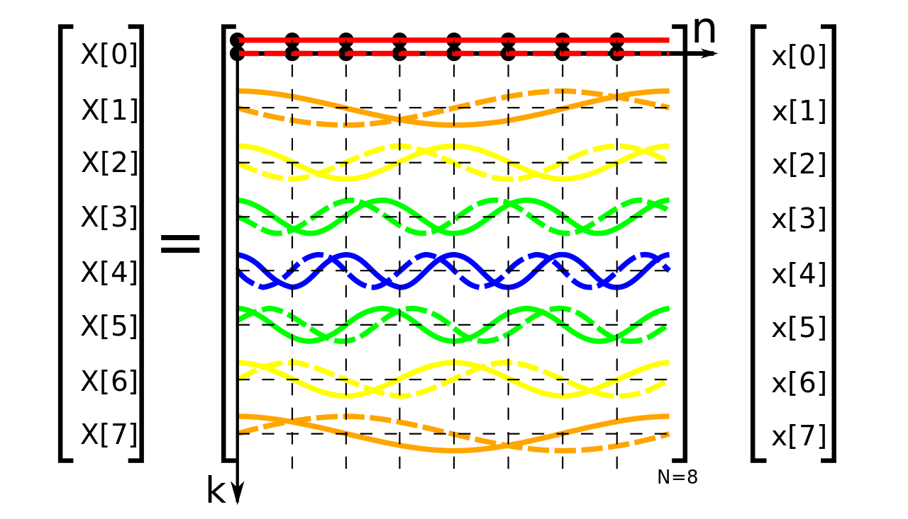

[ Home ] [ Code ]
Music Visualization


Music players with visualizations are fun to look at because it is aesthetically pleasing. Being an engineer with knowledge of Fourier Tansforms and its relationship to audio signal processing, I was trying to find a visualization that catches both of aesthetic and mathematical visualization of music, but was not able to find one satisfying within my reach. So I created one myself for the sake of fun and practice.
Technical Limitations:
This app uses Web Audio API which does not provide phase/angle information on the complex number output of FFT but magnitudes. Therefore fully reconstructing the decomposed frequency components into corresponding waveforms is not possible using this API alone. Meanwhile the amplitude of the decomposed waveforms shown are truthful to that of data, the slow standing-wave-like oscillations are arbitrary dynamics induced using Low Frequency Oscillators (LFO) for aesthetics.
Known Issues:
Currently the audio starts clipping following subsequent loads of audio files.
Volume buttons not working on mobile (android).
... or ...
Sample Music: Kubbi - Up In My Jam (No Copyright Music)
Sample Music: Kubbi - Up In My Jam (No Copyright Music)